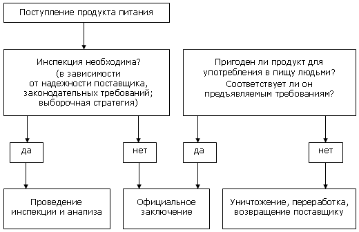

Инфекционные заболевания, в том числе предающиеся с пищей, являются проблемой мирового масштаба для здравоохранения и не признают границ. Активный импорт и экспорт продуктов питания многими странами создаёт условия для возникновения вспышек как хорошо известных, так и «экзотических» инфекций.
Инфекционные заболевания, в том числе предающиеся с пищей, являются проблемой мирового масштаба для здравоохранения и не признают границ. Активный импорт и экспорт продуктов питания многими странами создаёт условия для возникновения вспышек как хорошо известных, так и «экзотических» инфекций. В 2002 г. Всемирная Организация Здравоохранения (ВОЗ) назвала безопасность продуктов питания приоритетным вопросом как для потребителей, так и для производителей и государственных органов. Причиной подобного заявления стало возникновение в последние годы ряда вспышек инфекций, передававшихся через продукты питания, а также повышение риска террористических атак.
В большинстве стран мира существуют официальные органы, осуществляющие контроль над качеством и безопасностью продуктов, как производимых внутри страны, так и импортированных. Если ранее основной целью данных органов являлось выявление токсичных суррогатов и фальсификатов, то в настоящее время внимание сконцентрировано на безопасности продуктов питания во всех аспектах, включая микробиологический и токсикологический, и на всех этапах их производства, транспортировки и распространения.
Импортированные продукты питания потенциально могут быть:
- контаминированы патогенными микроорганизмами (например, сальмонеллы, патогенные штаммы Escherichia coli, Listeria monocytogenes и др.);
- содержать токсины изначально или как следствие нарушения условий транспортировки и хранения (стафилококковый энтеротоксин, афлотоксины и другие микотоксины, морские биотоксины);
- быть приготовленными с нарушением технологии, что может способствовать росту патогенных микроорганизмов или возникновению токсичных субстанций (например, Clostridium botulinum и ботулотоксин);
- содержать загрязнения из окружающей среды (тяжёлые металлы и т.п.);
- содержать пестициды или остаточные количества ветеринарных препаратов (продукты распада хлорорганических и фосфорорганических соединений);
- содержать запрещённые консерванты или избыточные концентрации разрешённых;
- быть неадекватно упакованы и/или маркированы.
Для оценки безопасности импортированных продуктов питания проводится их исследование согласно нижеприведённой схеме (рис. 1).

Рис. 1. Схема процесса инспекции импортированных продуктов питания
Опасность представляет также тот факт, что помимо известных, существует целый ряд еще не открытых патогенов и субстанций, потенциально угрожающих здоровью потребителей продуктов питания. В последние десятилетия был отмечен беспрецедентный рост числа новых зоонозных инфекций, возбудители ряда из которых представлены в таблице.
Новые возбудители инфекций человека, выявленные с 1970 г.
| 1970-е | 1980-е | 1990-е | 2000-е |
|---|
| Ротавирус | Helicobacter pylori | вирус Син Номбре (Sin nombre virus, главный представитель хантавирусов Нового Света) | человеческий метапневмовирус |
| Парвовирус В19 | Borrelia burgdorferi | вирус бешенства летучих мышей (Bat Lyssa virus) | коронавирус ТОРС (SARS) |
| Legionella pneumophila | вирус гепатита С | конский морбилливирус | |
| Campylobacter jejuni | вирус гепатита Е | вирусы группы Nipah/Hendra |
| Cryptosporidium parvum | вирус простого герпеса 6 тип | вирус простого герпеса В |
| Норовирусы | | вирус птичьего гриппа |
| Clostridium difficile | |
| Вирус Эбола |
Таким образом, безопасность продуктов питания является крайне актуальной проблемой. Рациональные меры предосторожности в сочетании с адекватной системой надзора и ответного реагирования, были и остаются самым эффективным способом предотвращения вспышек инфекции.
Westacott S.
Imported foods/imported diseases.
Culture 2004; 25(1):10-3.